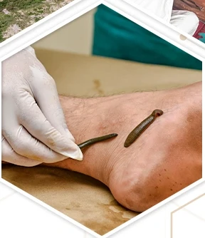

Home / Therapies
Therapies & treatments
Ten healing disciplines, one personalised plan — prescribed and supervised by our doctors.
Ten healing disciplines, one personalised plan — prescribed and supervised by our doctors.

Morning and evening yoga adapted to each illness. Combining yoga with Panchakarma and naturopathy greatly increases treatment effectiveness.
The five‑fold Ayurvedic purification — Abhyanga, Shirodhara, Basti, Potli massage and more — to remove deep‑seated toxins.
Herbal medicines and lifestyle guidance rooted in classical texts to correct imbalances of Vata, Pitta and Kapha.
Hydrotherapy, mud therapy and sun therapy that use nature's own elements to detoxify and rejuvenate.
Medically guided sattvic diets — juices, fasting protocols and balanced meals planned for your condition.
Six yogic cleansing practices such as Jal Neti and Kunjal that purify the body's internal channels.
Stimulating specific points to relieve pain, improve circulation and restore the body's energy flow.
Fine sterile needles at precise points for pain management, nerve conditions and stress relief.
Guided exercise and modalities for joints, spine, post‑injury recovery and neurological conditions.

Traditional bloodletting therapies — leech (Jalauka) and horn (Shringi) — for skin, joint and circulatory problems.

Evening havan, meditation and satsang to calm the mind and support emotional healing.
Colon therapy, ozone therapy, vibro massage, RHM, liver & gall‑bladder cleansing, coffee enema and more (charged extra).
Click any condition to ask Yog Mitra how Yog Gram can help.
Answer 6 quick questions to discover your dominant Ayurvedic dosha and get personalised wellness tips.
For general awareness only — your doctor at Yog Gram will assess your Prakriti in person.